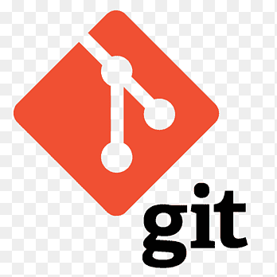

¿Quién Soy?
Hola, soy Frederick Perez, un estudiante universitario de término en ingeniería y sistema, en la Universidad O&M, especializado como desarrollador back end.
Contáctame ahoraMis Metas
En el plano personal, me enfoco bastante en ser una mejor versión de mi mismo, lo que me impulsa a extender mi conocimiento, no sólo en cuanto a la informática si no de manera general. Por lo tanto, me informo bastante a través de libros, documentales, cursos, blog, etc.
En el plano profesional, mi principal meta es desarrollar mis habilidades en el ámbito de software, adquirir más conocimiento y experiencia, con esto ser lo más productivo posible para dicha empresa o entidad interesada en mi servicio.

Sobre mis Proyectos
Actualmente estoy trabajando en lo que es el lenguaje de programación Java, framework, spring boot, micro servicios, etc. (Ver"Mis Habilidades" para más detalles). Los cuales me permiten realizar los siguientes proyectos
-Demo de administrador de proyectos (Api Rest)
-Demo de página web de bienes raíces (Pagina web)
-Sistema de votación (Api Rest)
Con estos proyectos, he podido poner en prácticas lo
siguiente:
-Concepto (principio Solid,patrones de diseños,etc)
-Seguridad informática (secciones,cookies,token,login,etc)
-Metodologías ágiles (“Scrum”,kamba,etc)
-Herramientas de software (Git,Slq,etc)
Proyectos realizados


Mis Habilidades
Html
Front-end
“HTML es un lenguaje de marcado que se utiliza para el desarrollo de páginas de Internet. Se trata de la siglas que corresponden a HyperText Markup Language, es decir, Lenguaje de Marcas de Hipertexto”
MySql
Backend
MySQL es un sistema de gestión de bases de datos relacional desarrollado bajo licencia dual: Licencia pública general/Licencia comercial por Oracle Corporation y está considerada como la base de datos de código abierto más popular del mundo,12 y una de las más populares en general junto a Oracle y Microsoft SQL Server, todo para entornos de desarrollo web.

Spring Boot
Backend
Spring es un framework para el desarrollo de aplicaciones y contenedor de inversión de control, de código abierto para la plataforma Java.La primera versión fue escrita por Rod Johnson, quien lo lanzó junto a la publicación de su libro Expert One-on-One J2EE Design and Development.

Java
Backend
Java es un lenguaje de programación orientado a objetos que se incorporó al ámbito de la informática en los años noventa. La idea de Java es que pueda realizarse programas con la posibilidad de ejecutarse en cualquier contexto, en cualquier ambiente, siendo así su portabilidad uno de sus principales logros.

Git
Control de Versiones
Git es un software de control de versiones diseñado por Linus Torvalds, pensando en la eficiencia, la confiabilidad y compatibilidad del mantenimiento de versiones de aplicaciones cuando estas tienen un gran número de archivos de código fuente.

Css3
Hojas de estilo en cascada
Git es un software de control de versiones diseñado por Linus Torvalds, pensando en la eficiencia, la confiabilidad y compatibilidad del mantenimiento de versiones de aplicaciones cuando estas tienen un gran número de archivos de código fuente.
¿Por qué contratarme?
Luego de esta presentación, creo que soy el candidato adecuado para este trabajo no solo porque tengo las aptitudes necesarias, especialmente en la programación, que ya he tenido la posibilidad de utilizar en varios proyectos universitarios y personales. Pero también porque siempre estoy dispuesto a dedicarme al 100% en mi trabajo y a perfeccionarme con el tiempo.
Además, me considero como una persona sociable, con la habilidad de trabajar en equipo para ser lo más productivo posible.
Contáctame ahora